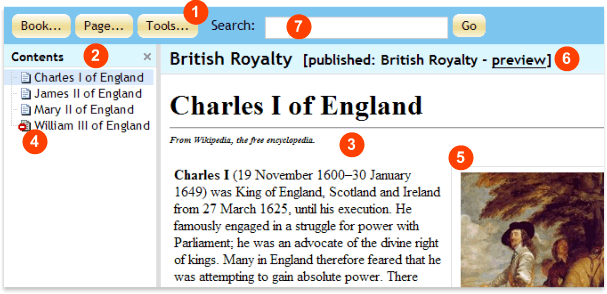

|
WebAsyst Pages at a glance
Here is your WebAsyst Pages main window:

- Toolbar: Click a button to open a pull down menu to access main functions:
- Book: Create new book, delete a current book, customize access rights for other users, change publication properties, backup, and restore a book
- Page: Add/edit/move/delete a page, organize pages in a book, and mark them as published/unpublished.
- Tools: Access and customize publication themes.
- Table of Contents: Shows a list of pages containing in the book. Click a page in the list to open it.
- Page Content: A page body appears here when you navigate to this page in the table of contents.
- Unpublished page: A draft page marked with "DO NOT ENTER" sign. "Unpublished" pages are available for editing, but do not appear in the published version of your book.
- Image: You can add images and place them at any location in your page body.
- Preview: Click to open a "published" version of your book in new window. When you mark your entire book as "published" you can customize a publication theme that will define an appearance of your book. Published book is available for public or authorized access via special address (URL).
- Search box. Enter keyword or a phrase (e.g. "King Charles") and click Go to see the list of pages where the search word is found.
|
|
|
Creating a new book
- Click Book -> Create New Book from the toolbar.
- Enter Book Name that will appear as a title of your book, and will be used as a reference to your book from WebAsyst Pages book list.
- Enter Book ID - a unique identifier; must contain only latin characters and/or numbers.
- Click Users tab to customize access rights for users.
- Click Groups tab to customize access rights for user groups.
- Click Save button.
|
|
|
Adding pages
To add a page to your book, click Page -> Add Page. In the Add Page window fill out the following information:
- Parent Level: a level in the Table of Contents hierarchy where the new page will be placed
- Title: page title as it will appear in the Table of Contents and as a “title” tag in the page HTML source code
- Page ID: page unique identifier, can contain only Latin characters, numbers and dash (“-“)
- Content: page content in the HTML editor window
- META tags: keywords and descriptions to be used by search engines
The picture below shows a sample of a new page in WebAsyst Pages built-in HTML editor:
You can add images to your page content. Save a page and click Add Image on the right. Locate an image you would like to insert. Once it appears on the Images pane, click in the content area where you want to place your image, and then click image thumbnail. |
|
|
Organizing pages
You can edit, copy, move, delete, or change order of your pages in the table of contents.
Click Page button from the toolbar to access the menu of available actions. |
|
|
Organizing Table of Contents
Click Page -> Organize Pages to make changes in the Table of Contents (TOC) of your book.
Click on a page and then click up or down arrows to change a location of this page in the Table of Contents.
Click Copy or Move button to copy or move selected page to another parent level.
To delete a page, click Delete button.
If you do not want a page to appear in your book, but would like to retain its content, click Mark as Unpublished Click Mark as Published if you want a previously unpublished page to appear in a book. |
|
|
Marking/Unmarking a page for publication
A page marked for publication is listed in pages list pane with a “page” icon left of its title. A page marked as non-published is listed with a “page with do not enter” icon left of its title. All “published” pages appear in your online book when you mark the entire book as published, while “unpublished” pages are skipped.
To mark a page for publication, click on a page in pages list pane and then click Page -> Mark as Published. To mark a page “unpublished”, click on a page and then Page -> Mark as Published:
|
|
|
Copying/Moving/Deleting pages
To make a copy of a page, select a page in the Table of Contents and then click Page -> Copy Page in the toolbar. The copy of a page will be displayed, which you can modify, save under a different name, etc.
To move a page to another level in your book’s TOC, click Page -> Organize Pages in WebAsyst Pages toolbar, select your page and then click Move.
To delete a page, select your page in pages list pane and click Page -> Delete Page.
NOTE: Once a page is deleted it cannot be restored. |
|
|
Publishing a book
You can publish your book online by specifying publication settings and properties. Click Book -> Publication Setup to specify the following settings:
- Publication Theme. Select a theme from the list that will determine how online book appears when published. Publication theme defines your book TOC and pages layout, headings and title’s format, text size, background and foreground colors, etc
- Language and Encoding. If your book is written in one of the languages included in your WebAsyst languages list, specify it in Language drop down list and the corresponding encoding in Encoding drop down list. The default encoding is ISO-8859-1
- Web address. Copy the automatically generated public URL of your online book and send it to readers.
- Authorization access. Turn on “User authorization required” if you would like to provide access to the book to authorized users only. In this case users will be required to enter their logins and password
Before you save all publication settings, you can have a preview of your book as it will appear when published. Click Preview to open your book preview in a new window. |
|
|
Using publication themes
WebAsyst Pages include a collection of themes for publishing your online books. Each publication theme defines “look and feel” of your book; i.e. its color, font, TOC and pages layout, title and heading text size, etc. You can publish every new book with a different theme, or choose one theme to represent your publishing trend and use it consistently.
Click Tools -> Publication Themes to see the list of publication themes. |
|
|
Adding/Customizing a theme
To create a publication new theme or modify an existing one, you are not required to have knowledge of HTML, CSS, or script language. WebAsyst Pages provides you with a theme constructor that creates a theme based on your choices of elements layout and format.
Click on any theme from the publication themes list (Tools -> Publication Themes) to display publication theme constructor. All the formatting elements are listed on the left of the constructor window; e.g. Book Header, Book Name, Search Panel, TOC Header, etc. Clicking on a formatting element will display its description and properties in the center of the window and a theme’s preview on the right.
The picture below shows a sample of theme constructor for Book Name element:
To customize a theme from the list, click on a theme to open its publication theme constructor and modify any of its properties. The preview is updated automatically every time you change a formatting property.
To create a new publication theme, click Tools -> Publication Themes and then Add New Theme. Enter the name of your new theme and specify the type of its TOC: Tree (TOC appears on the book’s left hand side) or Plain (the book appears on one page with TOC). You can then specify formatting properties in publication theme constructor.
Once you save the changes, your new or modified publication theme appears in the list and can be used to publish online books. |
|
|
Giving other users access to your book
To share your book with other WebAsyst Pages users and user groups, you need to set access rights to a book. Access rights setting can be done by a user with administrative privileges. Open a book and click Book -> Access Rights from WebAsyst Pages toolbar. Click on Users and Groups tabs to set/modify access to the book for users and user groups.
The following are available levels of access to a book:
- Read (R) – a user (user group) can read the book
- Write (W) – a user (user group) can add/modify pages in this book
- Full (F) – a user (user group) can add/modify pages, books & permissions
When setting access level to a book, the combination of personal and group access rights will be applied, e.g. if user Ann belongs to a group which has R (Read) access rights, then Ann has an effective permission as in the table below:
|
Personal Permission
|
Group Permission
|
Effective Permission
|
|
-
|
R
|
R
|
|
RW
|
RW
|
RW
|
|
RWF
|
R
|
RWF
|
NOTE: Setting access rights to a book can be done by a user who has F (Full) access level to this book or by an account administrator in "Users & Groups" window. |
|
|
Backup/Restore
You can create a backup copy (ZIP archive) of your book and download it to your local computer. Open a book and click Book -> Backup from WebAsyst Pages toolbar. Click OK to create a backup and then Download backup file to open the file or save it on your computer.
NOTE: Backup process may take longer if your book has a large number of pages
To restore book from a previously created backup, click Book -> Restore. Locate the backed up file, indicate unique book id, and click Restore. You book will be added to WebAsyst Pages. |
|